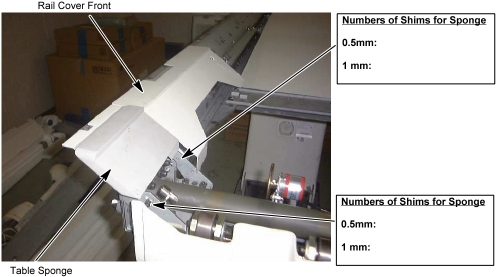
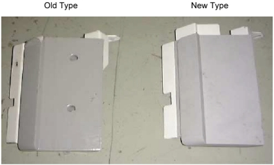

Illustration 2: Table Sponge Removal

Some tables might contain the old type of sponge, which is installed using one screw. In this case, the sponge bracket must be replaced before installing the new sponge which is installed using two screws. Refer to Step (front sponge bracket replacement) described below.
Illustration 3: Table Sponge
